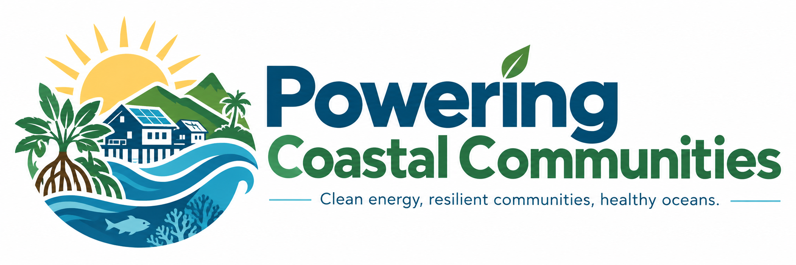
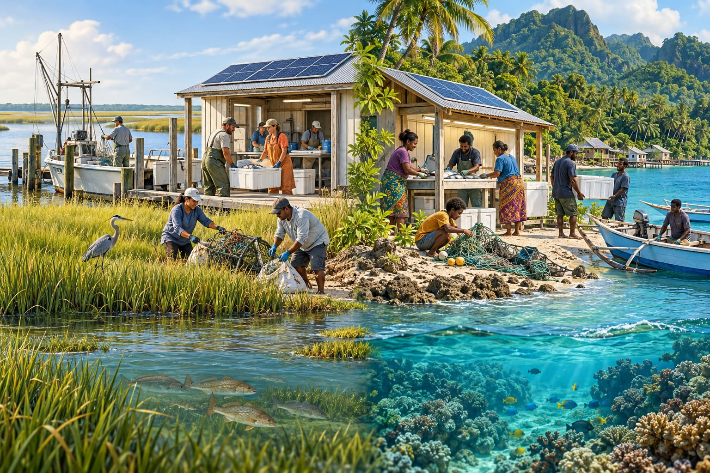
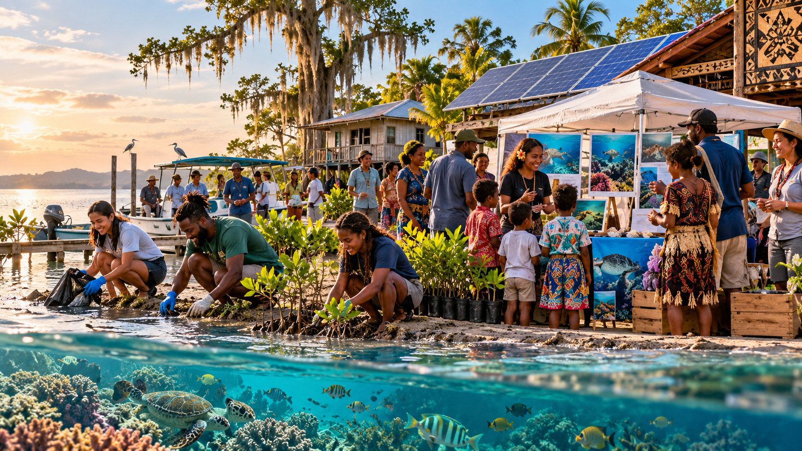

Global Goals
Explore the United Nations Sustainable Development Goals.

Powering Coastal Communities explores the connection between clean energy, healthy oceans, and economic opportunity in coastal communities in Louisiana and Papua New Guinea. Our goal is to raise awareness of the challenges these communities face while highlighting sustainable, community-centered solutions, such as solar and hydropower, shared fish preservation facilities, and marine conservation efforts. We explore how these approaches could improve energy access, reduce inequality and fish waste, protect marine resources, and support stronger, more resilient communities.

See how partnerships between communities, governments, and organizations can help support progress toward the Sustainable Development Goals.

Learn about ocean conservation, clean energy, and ways communities can work together to protect coastal environments.
Explore how solar and hydro power can provide cleaner and more reliable energy for coastal communities.
Learn how protecting marine ecosystems can support coastal communities in Louisiana and Papua New Guinea.
Brainstorm Some Ideas.
Explore the United Nations Sustainable Development Goals.
Sign up to receive updates about our project.
Questions about Powering Coastal Communities? Contact our project team for more information.